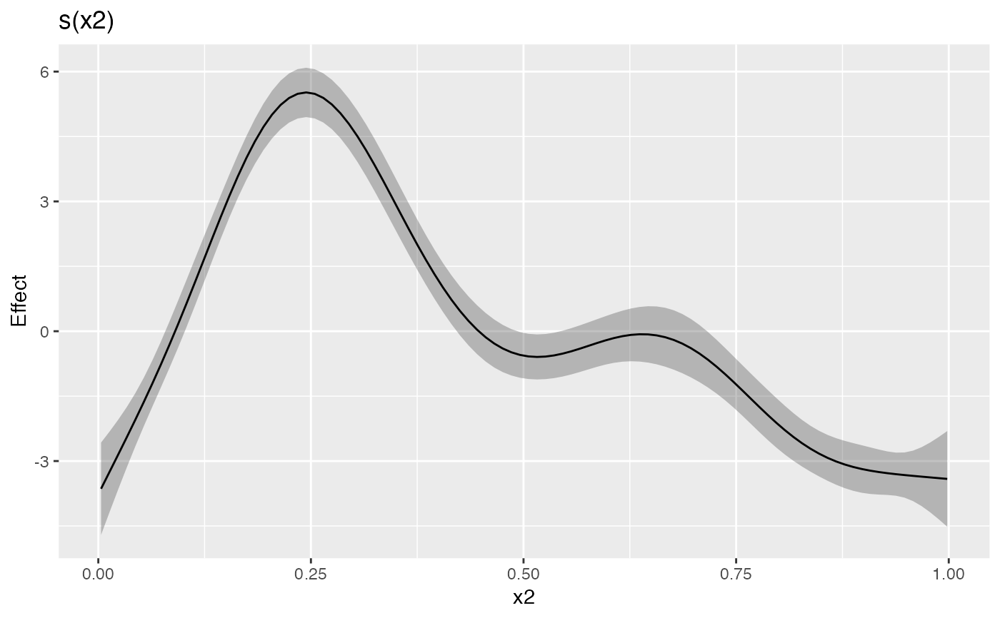
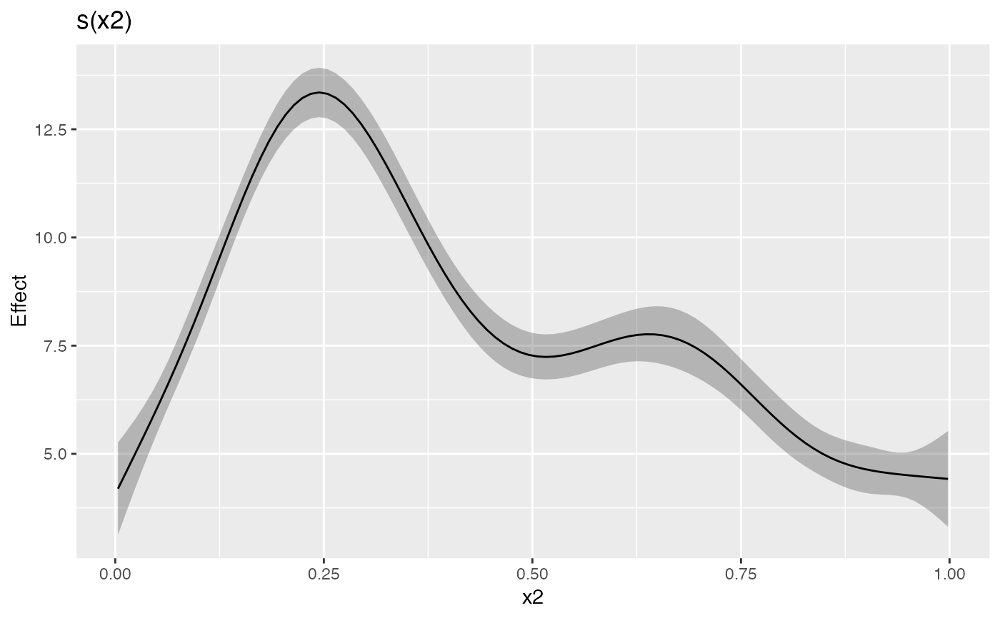
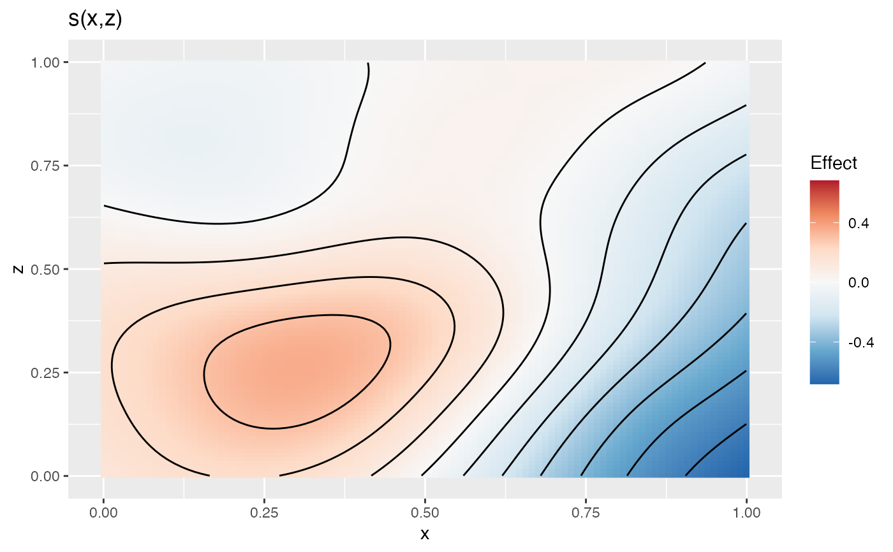

Plots estimated univariate and bivariate smooths using ggplot2.
# S3 method for evaluated_1d_smooth
draw(
object,
rug = NULL,
ci_level = 0.95,
constant = NULL,
fun = NULL,
xlab,
ylab,
title = NULL,
subtitle = NULL,
caption = NULL,
partial_residuals = NULL,
response_range = NULL,
...
)
# S3 method for evaluated_2d_smooth
draw(
object,
show = c("estimate", "se"),
contour = TRUE,
contour_col = "black",
n_contour = NULL,
constant = NULL,
fun = NULL,
xlab,
ylab,
title = NULL,
subtitle = NULL,
caption = NULL,
response_range = NULL,
continuous_fill = NULL,
...
)
# S3 method for evaluated_re_smooth
draw(
object,
qq_line = TRUE,
constant = NULL,
fun = NULL,
xlab,
ylab,
title = NULL,
subtitle = NULL,
caption = NULL,
response_range = NULL,
...
)
# S3 method for evaluated_fs_smooth
draw(
object,
rug = NULL,
constant = NULL,
fun = NULL,
xlab,
ylab,
title = NULL,
subtitle = NULL,
caption = NULL,
response_range = NULL,
discrete_colour = NULL,
...
)
# S3 method for evaluated_parametric_term
draw(
object,
ci_level = 0.95,
constant = NULL,
fun = NULL,
xlab,
ylab,
title = NULL,
subtitle = NULL,
caption = NULL,
rug = TRUE,
position = "identity",
response_range = NULL,
...
)| object | an object, the result of a call to |
|---|---|
| rug | For |
| ci_level | numeric between 0 and 1; the coverage of credible interval. |
| constant | numeric; a constant to add to the estimated values of the
smooth. |
| fun | function; a function that will be applied to the estimated values
and confidence interval before plotting. Can be a function or the name of a
function. Function |
| xlab | character or expression; the label for the x axis. If not
supplied, a suitable label will be generated from |
| ylab | character or expression; the label for the y axis. If not
supplied, a suitable label will be generated from |
| title | character or expression; the title for the plot. See
|
| subtitle | character or expression; the subtitle for the plot. See
|
| caption | character or expression; the plot caption. See
|
| partial_residuals | data frame; partial residuals and data values if
partial residuals are drawn. Should have names |
| response_range | numeric; a vector of two values giving the range of
response data for the guide. Used to fix plots to a common scale/range.
Ignored if |
| ... | arguments passed to other methods. |
| show | character; plot the estimated smooth ( |
| contour | logical; should contours be draw on the plot using
|
| contour_col | colour specification for contour lines. |
| n_contour | numeric; the number of contour bins. Will result in
|
| continuous_fill | suitable scale used for the filled surface. If |
| qq_line | logical; draw a reference line through the lower and upper theoretical quartiles. |
| discrete_colour | an appropriate discrete colour scale from |
| position | Position adjustment, either as a string, or the result of a call to a position adjustment function. |
A ggplot2::ggplot() object.
Gavin L. Simpson
load_mgcv()
dat <- data_sim("eg1", n = 400, dist = "normal", scale = 2, seed = 2)
m1 <- gam(y ~ s(x0) + s(x1) + s(x2) + s(x3), data = dat, method = "REML")
sm <- evaluate_smooth(m1, "s(x2)")
draw(sm)

## supply constant to shift y axis scale
draw(sm, constant = coef(m1)[1])

dat <- data_sim("eg2", n = 1000, dist = "normal", scale = 1, seed = 2)
m2 <- gam(y ~ s(x, z, k = 40), data = dat, method = "REML")
sm <- evaluate_smooth(m2, "s(x,z)", n = 100)
draw(sm)
